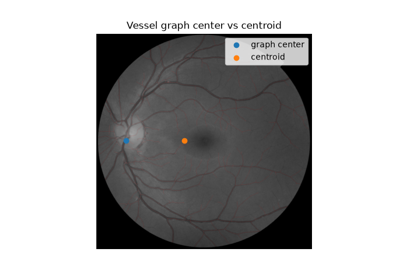
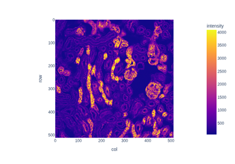
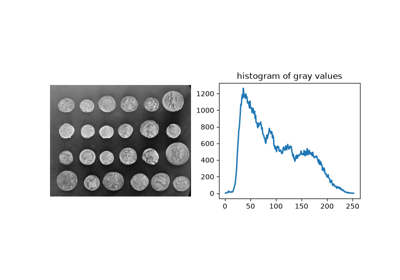
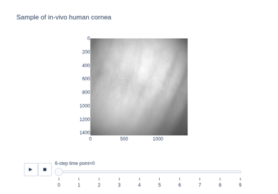
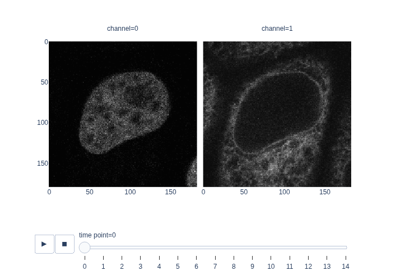
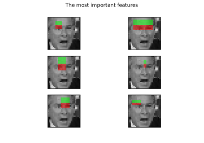

Longer examples and demonstrations#

Use pixel graphs to find an object’s geodesic center
Use pixel graphs to find an object's geodesic center


Estimate anisotropy in a 3D microscopy image
Estimate anisotropy in a 3D microscopy image

Comparing edge-based and region-based segmentation
Comparing edge-based and region-based segmentation


Restore spotted cornea image with inpainting
Restore spotted cornea image with inpainting

Measure fluorescence intensity at the nuclear envelope
Measure fluorescence intensity at the nuclear envelope

Face classification using Haar-like feature descriptor
Face classification using Haar-like feature descriptor